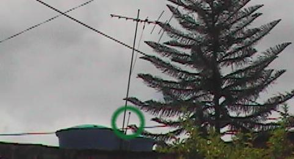
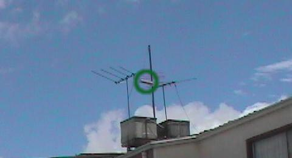
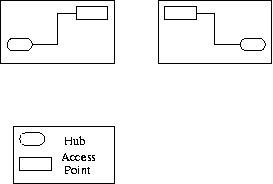
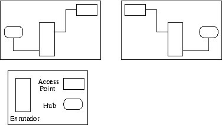
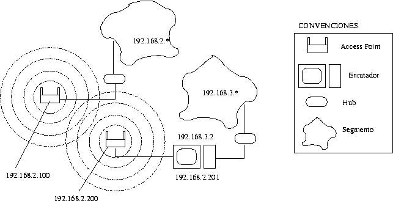
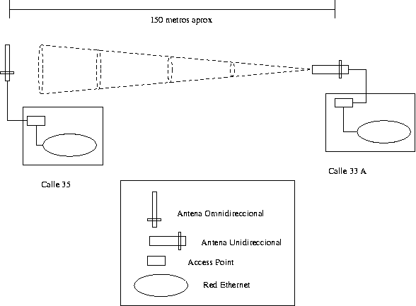

Este escrito documenta el proceso de instalación de antenas y dispositivos inalámbricos (protocolo IEEE 802.11b) en el Gimnasio Fidel Cano. Presentamos detalles técnicos y de caracter legal que nos han permitido la implementación de esta tecnología en Colombia con un presupuesto bajo.
Este documento muestra la implementación de la propuesta para interconectar dos redes de área local ''Dos redes Ethernet con TCP/IP, que emplean computadores con sistema operativo Linux'', ubicadas en 2 sedes del colegio, que se encuentran aproximadamente a una distancia de 150 metros.
Concluimos que era mejor emplear tecnología inalámbrica para disminuir costos, no depeneder de entidades externas a la institución (que ocurriría en caso de usarse los postes de la luz), ni ejecutar obra civil en las calles que separan las sedes del colegio. Aunque consideramos contratar una empresa, dados los costos, el deseo de aprender y dar a conocer lo aprendido y el apoyo, en especial de la Asociación de Padres de Familia del Gimnasio Fidel Cano, decidimos hacer la instalación completa por nuestra cuenta.
El apoyo económico para la compra de equipos fue dado por la Asociación de Padres de Familia del Gimnasio Fidel Cano y por donantes, la investigación, pruebas e instalación fue realizada por voluntarios (Igor Támara, Jorge Támara, Vladimir Támara, Claudia Vargas).
Aún no sabemos de otro colegio colombiano donde se haya implementado esta tecnología, ni conocemos información publicada por empresas que la han implementado, aún cuando cada vez sus costos son menores.
El uso de dispositivos inalámbricos para formar redes de área local con computadores moviles (e.g portátiles) es cada vez más común, después de la estandarización del protocolo IEEE 802.11b.
Esto ha permitido que los precios de dispositivos que lo soportan haya disminuido. En estas redes móviles hay un "punto de acceso" ''en inglés acces point'' que se conecta a una red Ethernet y que puede comunicarse con tarjetas especiales instaladas en cada computador portatil; para efectuar la comunicación se emplean ondas electromágnéticas de baja potencia a una frecuencia de 2.4GHz''Para comparar, por ejemplo, las emisoras AM en Colombia emplean frecuencias entre 535Khz y los 1.705Khz''.
El Ministerio de telecomunicaciones tiene claramente estipulado el uso de este tipo de frecuencia, según la Resolución 797 de 8 de Junio de 2001 artíiculo 3 tabla 3.6. Según el cual podemos como colegio con propósito de educación o en ambientes de investigación emplear este espacio radioeléctrico sin necesidad de tributar.
Dependiendo de la potencia del punto de acceso, cada portatil puede separarse hasta una distancia máxima del punto de acceso (120 mt. en el caso del Intel 2011A con línea de vista a 11MBps), la velocidad de transmisión máxima es de 11Mbps ''La velocidad de una red Ethernet típica como la del colegio es 10Mbps, aunque cada vez son más populares de 100Mbps y existen de 1000Mbps''}, sin embargo en la práctica la velocidad es menor porque depende de condiciones climáticas y disminiye si hay obstáculos (e.g paredes) entre punto de acceso y portátil.
Los puntos de acceso y las tarjetas pueden encriptar/desencriptar información con el esquema WEP (Wired Equivalent Privacy) ''El esquema WEP no es seguro por lo que deben emplearse otras aplicaciones para mejorar privacidad (e.g IPsec a nivel de IP, ssh, Kerberos en el caso de TCP o Radius para autenticación).''.
Puede consultarse más sobre redes moviles con este protocolo por ejemplo en: http://www.cis.ohio-state.edu/~jain/cis788-97/wireless_lans/index.htm|
Algunos puntos de acceso, además de ofrecer la funcionalidad descrita, pueden conectarse inalámbricamente con otro punto de acceso y funcionar como puente entre dos redes de área local. Puede amplificarse la señal de alguno (o de ambos) puntos de acceso empleando antenas, por ejemplo si están muy separados o si hay obstaculos entre ellos.
Existen antenas omnidireccionales y unidireccionales, las primeras emiten y captan señales que no necesitan una dirección específica para establecer la comunicación vía inalámbrica, por otra parte las segundas necesitan estar colocadas de forma tal que apunten hacia el lugar con el cuál se desea establecer el enlace.
Adicionalmente las antenas dependiendo de su especificación pueden tener distintas potencias, que eventualmente pueden emplear unos amplificadores de señal para maximizar su alcance.
OJO. Completar redes comunitarias
Para el caso de interconexión de las redes del colegio buscamos puntos de acceso con funcionalidad de puentes, que pudieran conectarse a antenas y que además pudieran ser configurados desde Linux (existen puntos de acceso que sólo pueden configurarse con software para Windows). A continuación se presentan algunos ''Pueden consultarse más por ejemplo en la sección de dispositivos de http://www.amazon.com o en http://computers.cnet.com/hardware'':
\begin{tabular}{|c|c|c|c|c|c|}
Fabricante & Referencia & PA - PA & Linux & Dic/2001 (US\$) & Jul/2002 (US\$) \\
Cisco & AiroNet 342 & Si & Si & 1000 & 700 \\
Intel & 2011A & Si & Si & 700 & 650\footnote{Precio visto en http://www.jdjstore.com/inprow20.html el 21 de Julio 2002.} \\
Barricade & SMC7004AWBR & No & Si & 400 & \\
Syslink & WAP11 & Si & Si & 300 & 118
Hoy se encuentran más marcas y modelos de este tipo de dispositivos a precios cada vez menores. Aunque consideramos en un comienzo emplear dos Syslink WAP11 ---con base en este punto de acceso y antenas más económicas se había hecho un presupuesto inicial---, por información recibida en lista de correo del grupo de usuarios de wireless en el área de la bahía de San Francisco BAWUG que indicaban inconvenientes del firmware de ese entonces del WAP11 (que hacián que fuera necesario reiniciarlo manualmente periódicamente), y además requería Windows para configurarlo, el costo real serían unos 200 dólares más por dispositivo para poder hacer la reconfiguración vía el puerto serial del computador, preferimos un punto de acceso más costoso esperando menos inconvenientes.
Con Los Access Point, después de más de 8 meses de uso diario, no se ha encontrado desconfiguración de los mismos, han trabajado ininterrumpidamente.
El sitio de compra de los Access Point fue sparco.com, las antenas por su parte fueron compradas a Hyperlink technologies.
Cuando se compran dispositivos con tarjeta de crédito, generalmente los bancos dueños de las tarjetas cobran la taza de cambio en el momento en el que se hace efectivo el cobro, no en la fecha de compra, y dado que el peso colombiano frente al dólar se mantiene en una continua decadencia, los costos siempre son más altos que los presupuestados inicialmente.
Adicionalmente a los costos de envío de las compras hechas por Internet la Dirección de Impuestos y Aduanas Nacionales DIAN cobra un porcentaje sobre el costo del equipo a importar.
El costo es del 20% para equipos eléctricos y electrónicos, y en teoría para compras por parte de instituciones educativas, hay exención de impuestos, pero esto requiere un reconocimiento especial ante Colciencias del tipo de investigación Artículo 27 Ley 633 de 2000.
Las Cias o empresas importadoras, generalmente no prestan mucho apoyo para buscar la reducción de impuestos, su trabajo se limita usualmente a garantizar que las personas paguen los impuestos determinados por la DIAN.
Adicionalmente por la catalogación de las mercancías las CIAs, cobran un porcentaje del costo de los equipos que se han importado.
Las antenas fueron adquiridas a un proveedor que las exportó acogiéndose a envío urgente de mercancías con un costo de aranceles del 20% y un costo de IVA del 16%. Las mercancías llegaron y fueron pagos los aranceles.
Los Access Point fueron enviados por DHL, y se estuvo averiguando en la DIAN la posibilidad de acogerse a equipos de cómputo, pero dado que no eran considerados equipos con procesamiento autónomo, fueron catalogados como equipos de conectividad, con un impuesto de importación del 15% e IVA del 16%.
Aunque en Colombia para apoyar el uso de Internet hay exenciones de impuestos, la averiguación y la realización de estos trámites implica costos y tiempos que podrían ser incrementados por el bodegaje y el costo de espera de las empresas importadoras. Se optó por pagar los impuestos y evitar el pago de un abogado para lograr la exención de impuestos.
Dos opciones:
contratar un abogado, esperar lo que tarde el proceso, pagar los sobrecostos de la espera de la liberación de la mercancía
Pagar los impuestos como lo haría una empresa.
A pesar de haber mostrado y llevado los certificados que acreditaban a la institución educativa para obtener reducción de impuestos, decidimos acogernos a la segunda opción, asumiendo costos de impuestos de importación de cerca del 33\% del valor real de los dispositivos.
Si hubiésemos escogido la primera opción sufríamos el riesgo de tardar mucho tiempo y no contar con el servicio lo más pronto posible, adicionalmente, si los componentes tardan mucho tiempo en bodegaje, esto sería cargado a la cuenta, y podría ser más costoso incluso que los componentes importados.
En este sentido sería bueno contar con un poco más de apoyo y credibilidad por parte de las autoridades para no tardar en este tipo de trámites y hacer viable la masificación del uso de Internet por medio de estos servicios.
A continuación se presentan las opciones de conexión de las dos redes que se identificaron, las consideraciones que se tuvieron en cuenta, y la elección final.
No basta con tener los dispositivos, estos deben ser configurados, y si la configuración se realiza efectivamente, se pueden aprovechar al máximo las capacidades de los mismos.
La elección de hardware hecha :
Antena Omnidireccional 8 dBi Omnidirectional Antenna
Antena Unidireccional 2.4 GHz Radome-Enclosed Yagi Antenna
2 Access Point Intel PRO/Wireless 2011 LAN Acces Point


La primera fase de prueba lógica fue hecha con dos Access Point separados a unos 10 metros de distancia para que emplearan las antenas con las que vienen, que en condiciones normales son capaces de comunicarse hasta 120 metros de distancia.
La configuración inicial de los Access Point se logró empleando los números IPs con los que vienen predeterminados de fabrica, se emplearon dos concentradores, dos computadores y dos access point, cada computador y cada access point estaban conectados a un concentrador, los concentradores no estaban conectados por un cable.
A continuación algunos tiempos de respuesta empleando esta configuración desde un computador conectado al hub de un access point a otro computador conectado al hub conectado al otro access point:
PING secretaria.gfc.edu.co (192.168.3.64): 56 data bytes 64 bytes from 192.168.3.64: icmp_seq=0 ttl=255 time=3.6 ms 64 bytes from 192.168.3.64: icmp_seq=1 ttl=255 time=3.8 ms 64 bytes from 192.168.3.64: icmp_seq=2 ttl=255 time=3.4 ms 64 bytes from 192.168.3.64: icmp_seq=3 ttl=255 time=3.6 ms 64 bytes from 192.168.3.64: icmp_seq=4 ttl=255 time=4.2 ms 64 bytes from 192.168.3.64: icmp_seq=5 ttl=255 time=3.3 ms 64 bytes from 192.168.3.64: icmp_seq=6 ttl=255 time=3.4 ms 64 bytes from 192.168.3.64: icmp_seq=7 ttl=255 time=3.5 ms 64 bytes from 192.168.3.64: icmp_seq=8 ttl=255 time=3.2 ms
Una vez vista la funcionalidad de los access point se dispuso el montaje de las antenas, una omnidireccional y otra direccional, conectadas cada una a un access point con tiempos de respuesta similares.
Inicialmente se colocaron Access point con una máscara de red que les permitiera vía broadcast enviar los paquetes de una sede a otra, esta configuración fue realmente sencilla y no requirió ninguna modificación a ninguno de los elementos de red con los que se contaba en el colegio, a parte de la configuración de los access point:

Otra posible configuración que podría implementarse es la ubicación de un computador que hiciera las veces de enrutador entre una sede y otra para colocar un segmento adicional que mantuviera a los dos access point por fuera del broadcast de las dos redes independientemente, es decir, se requeriría dos computadores, con dos tarjetas de red, es decir uno en cada sede para lograr este efecto.

Finalmente la configuración escogida fue colocar un computador para enrutar en una de las sedes que conecta a un access point y en la otra sede un access point colocado directamente al concentrador.

En este esquema se muestra cómo estarían colocadas las antenas uni y omnidireccionales.

Este es un ejemplo de la configuración hecha a un access point. Es indispensable entender que vía telnet se puede hacer la configuración de los dispositivos y lo que está aquí presentado es la captura de la información tal como está configurado.
Para la comunicación de la sede en la que se encuentra un computador enrutando, es indispensable que hayan dos tarjetas de red, una va con cable cruzado al access point, y la otra va con un cable directo al hub, en caso de que se conecte el hub directamente al access point, el cable es directo.
Ojo, falta describir el proceso de configuración de paidos para que sea un enrutador entre las dos sedes.
Ojo, falta colocar cómo se coloca la ruta para que los computadores de primaria busquen a los de bachillerato y no se vayan a navegar a internet.
A Jorge Támara por haberse subido a los sitios en los cuáles era necesario colocar las antenas y pasar los cables para poderlos conectar al HUB.
A Claudia Vargas por averiguaciones legales varias, estuvo muy interesada en colaborar en el proyecto.